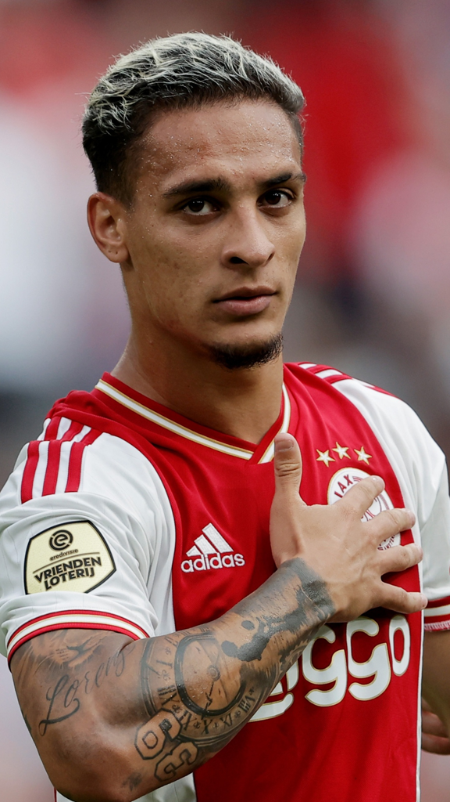
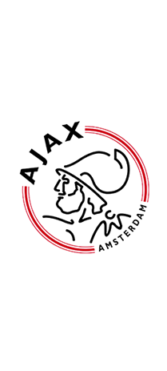
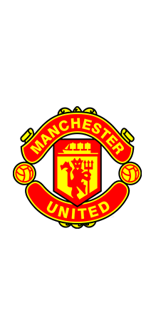
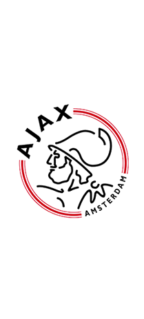
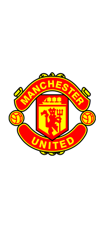

Antony Matheus dos Santos
 Nascido em 24 de fevereiro de 2000 (22 Anos)
Nascido em 24 de fevereiro de 2000 (22 Anos)
Antony Matheus dos Santos (Osasco, 24 de fevereiro de 2000), mais conhecido apenas como Antony, é um futebolista brasileiro que atua como ponta-direita. Atualmente joga pelo Manchester United.
clubes 



 43 Gols
43 Gols